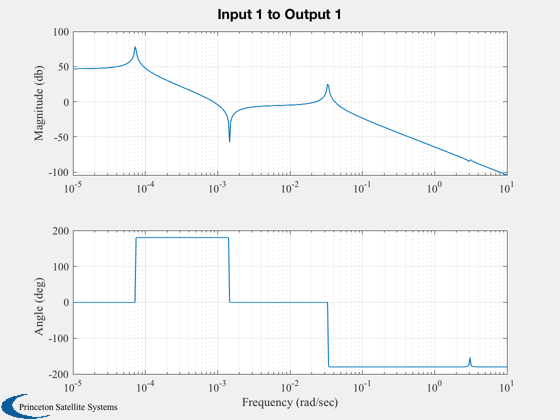
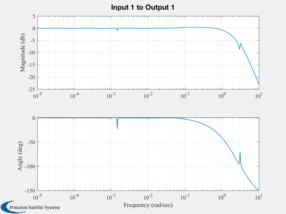
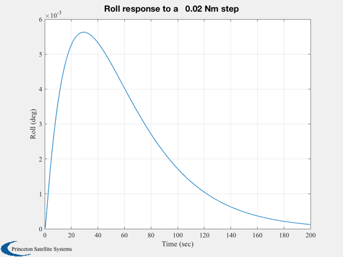
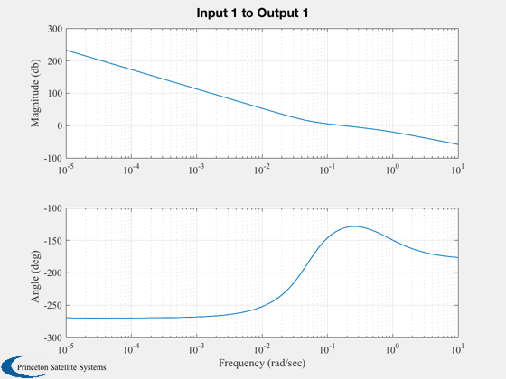
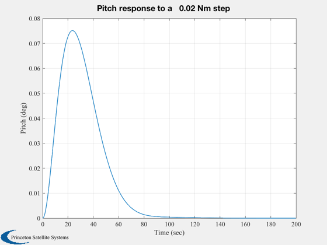
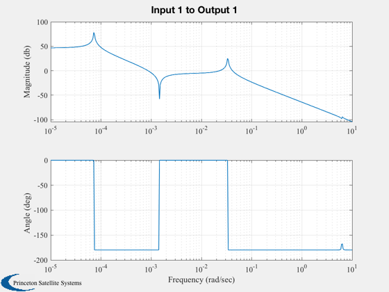
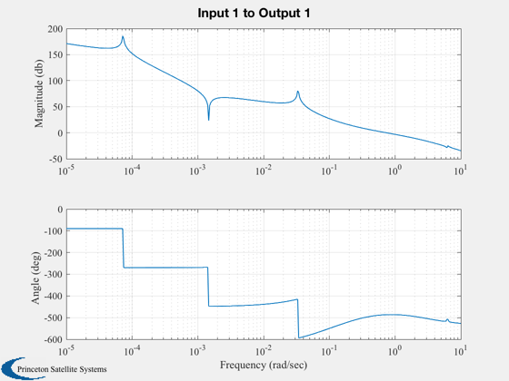
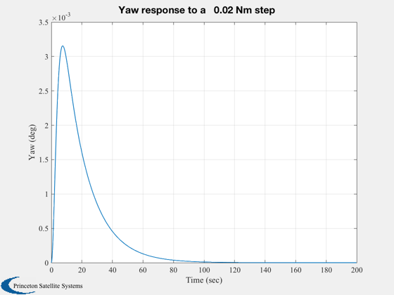
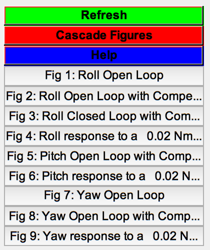

Compensate the flexible solar array on the ComStar Spacecraft.
Only one axis is tested at a time. Consequently, the nutation mode will appear unstable but should not appear in the response due to the high gain of the loops.
=------------------------------------------------------------------------ See also FlexMod, ComStar, PIDMIMO, AC, C2DZOH, FResp, Series, Plot2D, Rename, WriteCM, RBModel -------------------------------------------------------------------------
Contents
- Select a rigid body model
- Constants
- Database
- The state is [qX;qY;qZ;wX;wY;wZ;modes]
- Load the flex model
- Open loop eigenvalues
- Design the PID
- Append the plant model and the controller model
- Dump the matrices if requested
- Display the eigenvalues
- Simulate the loop
- Design the PID
- Dump the matrices if requested
- Append the plant model and the controller model
- Close the loop
- Display the eigenvalues
- Simulate the loop
- Load the flex model
- Open loop eigenvalues
- Design the PID
- Append the plant model and the controller model
- Dump the matrices if requested
- Display the eigenvalues
- Simulate the loop
%-------------------------------------------------------------------------- % Copyright 1995-1996 Princeton Satellite Systems, Inc. % All rights reserved. %-------------------------------------------------------------------------- % Since version 2. %--------------------------------------------------------------------------
Select a rigid body model
%-------------------------- rBModel = 'no'; cMatrices = 'no'; % If yes will dump matrices to a file and display them if( strcmp(cMatrices, 'yes') ) fID = fopen('SK','w'); end
Constants
%----------
degToRad = pi/180;
radToDeg = 180/pi;
dT = 0.25;
nSim = 800;
uStep = 0.02;
Database
%--------- inr = ComStar('MO Inertia');
The state is [qX;qY;qZ;wX;wY;wZ;modes]
%--------------------------------------- w = logspace(-5,1,400); %------------------------------------------------------------------------- disp('Roll') %-------------------------------------------------------------------------
Roll
Load the flex model
%-------------------- load FlexM00
Open loop eigenvalues
%---------------------- disp('Open loop eigenvalues w ith the array at 0 deg'); disp(eig(a)); d = 0; n = size(b,1); b = b(:,1); % Tx c = [1 zeros(1,n-1)]; FResp(a,b,c,d,1,1,w,'unwrap'); Rename('Roll Open Loop');
Open loop eigenvalues w ith the array at 0 deg 0.000000000000000 + 0.000000000000000i 0.000000000000000 + 0.000000000000000i 0.000000000000000 + 0.000072921158553i 0.000000000000000 - 0.000072921158553i -0.094708992131515 + 6.277675975513410i -0.094708992131515 - 6.277675975513410i -0.000000000010592 + 0.033505063031180i -0.000000000010592 - 0.033505063031180i -0.046529080815352 + 3.078742045893069i -0.046529080815352 - 3.078742045893069i -0.093645867653168 + 6.242349503207747i -0.093645867653168 - 6.242349503207747i -0.045846170833089 + 3.056067523247763i -0.045846170833089 - 3.056067523247763i
Design the PID
%--------------- zeta = 4; omega = 0.3; tauInt = 200; % Will determine the peak of the overshoot. Smaller tauInt means smaller overshoot. omegaR = 10*omega; [aC, bC, cC, dC] = PIDMIMO( inr(1,1), zeta, omega, tauInt, omegaR ); if( strcmp( rBModel, 'yes' ) ) a = [0 1;0 0]; b = [0; 1/inr(1,1)]; c = [1 0]; d = 0; end
Append the plant model and the controller model
%------------------------------------------------ [a,b,c,d] = Series(a,b,c,d,aC,bC,cC,dC); FResp(a,b,c,d,1,1,w,'unwrap'); Rename('Roll Open Loop with Compensator');
Dump the matrices if requested
%------------------------------- if( strcmp(cMatrices,'yes') ) [aX,bX,cX,dX] = PIDMIMO(inr(1,1),zeta,omega,tauInt,omegaR,dT,'Delta'); WriteCM(fID,'A Matrix X','fSKXAMatrix',reshape(aX',1,length(aX)^2),12,20,3) WriteCM(fID,'B Matrix X','fSKXBMatrix',bX,12,20,3) WriteCM(fID,'C Matrix X','fSKXCMatrix',cX,12,20,3) WriteCM(fID,'D Matrix X','fSKXDMatrix',dX,12,20,3) end aCL = a - b*c; FResp(aCL,b,c,d,1,1,w,'unwrap'); Rename('Roll Closed Loop with Compensator');
Display the eigenvalues
%------------------------ s = eig(a - b*c); DispWithTitle(s,'Eigenvalues');
Eigenvalues 0.000000000000000 + 0.000000000000000i 0.000000000000000 + 0.000000000000000i -0.094709112482872 + 6.277676096424284i -0.094709112482872 - 6.277676096424284i -2.903765845506218 + 0.000000000000000i -2.436509974910919 + 0.000000000000000i -0.056891323946467 + 3.080091914628575i -0.056891323946467 - 3.080091914628575i 0.000000760251406 + 0.001461736879842i 0.000000760251406 - 0.001461736879842i -0.041674697983157 + 0.000000000000000i -0.028742201694649 + 0.000000000000000i -0.093645867653168 + 6.242349503207742i -0.093645867653168 - 6.242349503207742i -0.045846170833088 + 3.056067523247763i -0.045846170833088 - 3.056067523247763i
Simulate the loop
%------------------ yPlot = zeros(1,nSim); n = length(aCL); x = zeros(n,1); % Rest conditions at the start c = [1 zeros(1,n-1)]; [aCL, b] = C2DZOH( aCL, b, dT ); for k = 1:nSim yPlot(k) = c*x; x = aCL*x + b*uStep; end titleStr = sprintf('Roll response to a %6.2f Nm step',uStep); Plot2D((0:(nSim-1))*dT,yPlot*radToDeg,'Time (sec)','Roll (deg)',titleStr); %------------------------------------------------------------------------- disp('Pitch') %-------------------------------------------------------------------------
Pitch
Design the PID
%--------------- zeta = 0.7071; omega = 0.1; tauInt = 100; % Will determine the peak of the overshoot. Smaller tauInt means smaller overshoot. omegaR = 5*omega; [aC, bC, cC, dC] = PIDMIMO( inr(2,2), zeta, omega, tauInt, omegaR );
Dump the matrices if requested
%------------------------------- if( strcmp( cMatrices, 'yes' ) ) [aX,bX,cX,dX] = PIDMIMO(inr(1,1),zeta,omega,tauInt,omegaR,dT,'Delta'); WriteCM(fID,'A Matrix Y','fSKTAMatrix',reshape(aX',1,length(aX)^2),12,20,3) WriteCM(fID,'B Matrix Y','fSKYBMatrix',bX,12,20,3) WriteCM(fID,'C Matrix Y','fSKYCMatrix',cX,12,20,3) WriteCM(fID,'D Matrix Y','fSKYDMatrix',dX,12,20,3) end a = [0 1;0 0]; b = [0; 1/inr(2,2)]; c = [1 0]; d = 0;
Append the plant model and the controller model
%------------------------------------------------ [a,b,c,d] = Series(a,b,c,d,aC,bC,cC,dC); FResp(a,b,c,d,1,1,w,'unwrap'); Rename('Pitch Open Loop with Compensator');
Close the loop
%---------------
aCL = a - b*c;
Display the eigenvalues
%------------------------ s = eig(aCL); DispWithTitle(s,'Eigenvalues');
Eigenvalues -0.500000000000000 + 0.000000000000000i -0.070710000000000 + 0.070711356230806i -0.070710000000000 - 0.070711356230806i -0.062831853071795 + 0.000000000000000i
Simulate the loop
%------------------ yPlot = zeros(1,nSim); n = length(aCL); x = zeros(n,1); % Rest conditions at the start c = [1 zeros(1,n-1)]; [aCL, b] = C2DZOH( aCL, b, dT ); for k = 1:nSim yPlot(k) = c*x; x = aCL*x + b*uStep; end titlestr = sprintf('Pitch response to a %6.2f Nm step',uStep); Plot2D((0:(nSim-1))*dT,yPlot*radToDeg,'Time (sec)','Pitch (deg)',titlestr); %------------------------------------------------------------------------- disp('Yaw') %-------------------------------------------------------------------------
Yaw
Load the flex model
%-------------------- load FlexM90
Open loop eigenvalues
%---------------------- disp('Open loop eigenvalues with the array at 90 deg') s = eig(a); DispWithTitle(s,'Eigenvalues'); d = 0; [n,m] = size(b); b = b(:,1); % Tx c = [1 zeros(1,n-1)]; FResp(a,b,c,d,1,1,w,'unwrap'); Rename('Yaw Open Loop');
Open loop eigenvalues with the array at 90 deg Eigenvalues 0.000000000000000 + 0.000000000000000i 0.000000000000000 + 0.000000000000000i 0.000000000000000 + 0.000072921158553i 0.000000000000000 - 0.000072921158553i -0.000000000008575 + 0.033505068312684i -0.000000000008575 - 0.033505068312684i -0.095040605993570 + 6.288654499226070i -0.095040605993570 - 6.288654499226070i -0.046366732440016 + 3.073366795926412i -0.046366732440016 - 3.073366795926412i -0.045846258311683 + 3.056070438215323i -0.045846258311683 - 3.056070438215323i -0.093645688968816 + 6.242343549075901i -0.093645688968816 - 6.242343549075901i
Design the PID
%--------------- zeta = 0.7071; omega = 0.4; tauInt = 100; % Will determine the peak of the overshoot. Smaller tauInt means smaller overshoot. omegaR = 5*omega; [aC, bC, cC, dC] = PIDMIMO( inr(3,3), zeta, omega, tauInt, omegaR ); if( strcmp( rBModel, 'yes' ) ) a = [0 1;0 0]; b = [0; 1/inr(3,3)]; c = [1 0]; d = 0; end
Append the plant model and the controller model
%------------------------------------------------ [a,b,c,d] = Series(a,b,c,d,aC,bC,cC,dC); FResp(a,b,c,d,1,1,w,'unwrap'); Rename('Yaw Open Loop with Compensator');
Dump the matrices if requested
%------------------------------- if( strcmp( cMatrices, 'yes' ) ) [aX,bX,cX,dX] = PIDMIMO(inr(3,3),zeta,omega,tauInt,omegaR,dT,'Delta'); WriteCM(fID,'A Matrix Z','fSKZAMatrix',reshape(aX',1,length(aX)^2),12,20,3) WriteCM(fID,'B Matrix Z','fSKZBMatrix',bX,12,20,3) WriteCM(fID,'C Matrix Z','fSKZCMatrix',cX,12,20,3) WriteCM(fID,'D Matrix Z','fSKZDMatrix',dX,12,20,3) end aCL = a - b*c;
Display the eigenvalues
%------------------------
disp(eig(a - b*c));
0.000000000000000 + 0.000000000000000i 0.000000000000000 + 0.000000000000000i -0.095825700833759 + 6.290685869355785i -0.095825700833759 - 6.290685869355785i -1.676070768804950 + 0.000000000000000i -0.443995811900262 + 0.228278913414416i -0.443995811900262 - 0.228278913414416i -0.062879049815816 + 0.000000000000000i 0.000000119334348 + 0.001461799729664i 0.000000119334348 - 0.001461799729664i -0.046366962268003 + 3.073367073441809i -0.046366962268003 - 3.073367073441809i -0.093645688968816 + 6.242343549075902i -0.093645688968816 - 6.242343549075902i -0.045846258311684 + 3.056070438215322i -0.045846258311684 - 3.056070438215322i
Simulate the loop
%------------------ yPlot = zeros(1,nSim); n = length(aCL); x = zeros(n,1); % Rest conditions at the start c = [1 zeros(1,n-1)]; [aCL, b] = C2DZOH( aCL, b, dT ); for k = 1:nSim yPlot(k) = c*x; x = aCL*x + b*uStep; end titleStr = sprintf('Yaw response to a %6.2f Nm step',uStep); Plot2D((0:(nSim-1))*dT,yPlot*radToDeg,'Time (sec)','Yaw (deg)',titleStr); if( strcmp(cMatrices, 'yes') ) fclose(fID); end Figui; %-------------------------------------- 